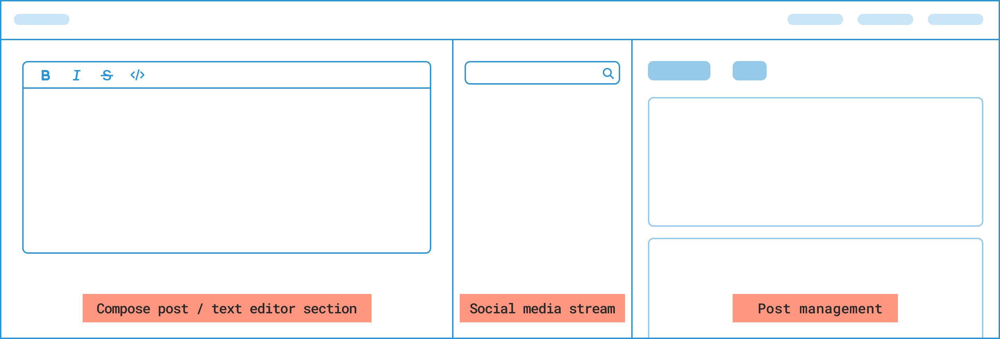
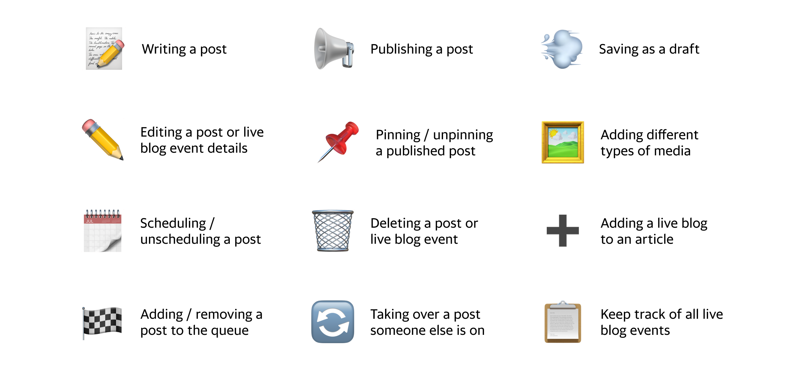

Pick n Roll is Yahoo's internal content management and publishing tool. It allows editors to create and publish media content to websites within the Yahoo ecosystem, such as Yahoo News, Sports, and Finance.
With the sunsetting of Scribble Live, the third party tool our editors used for live blogging, we want to build support for creating live blogs directly into the internal tool editors are already using to publish content.
Led design efforts by communicating and collaborating with product and engineering partners to define the user experience and visual representation of this feature.
By developing an in-house live blog experience, editors can use Yahoo media libraries and content modules to create more live blogs and drive user engagement.
I wanted to get a good idea of how existing live blog tools were designed to understand what components were necessary or useful for editors when live blogging. I identified some main components that appeared across different live blog tools.
Including these familiar sections would help legacy users transition from one tool to another and would help completely new users orient themselves easily.
[FIG 1] COMMON LIVE BLOG TOOLING SECTIONS
I worked with product and engingeering partners to determine how live blogs would be integrated with our current tool. Based on our tool's existing architecture and content creation flows, we decided that live blogs would be created and completed with these steps:
After deciding on how live blogs would be integrated, I started drafting layout and flow options based on our users' needs and competitive analyis insights. I created lo-fi designs and used them to walk through options with partners.
Dedicating a specific design style as "lo-fi" helped center conversations around interaction design and foundation product decisions instead of partners focusing on visual design elements during this early stage of product and design planning.
[FIG 2] LO-FI CREATION FLOW EXAMPLE

As we had a short timeline to design and develop this MVP in time before the third party tool was shut down, we had to refine the features we wanted to have. Out of the three main sections other live blog tools had, we decided to develop only the text editor and post management sections into our tool.
Creating a live blog requires many use cases that I also needed to think about and design for. There were use cases regarding the live blog dashboard, the addition of a live blog to an article, collaboration and communication methods between editors, as well as different actions a user could take to create and manage posts.
[FIG 3] LIVE BLOG USE CASES
[FIG 4] LIVE BLOG WALKTHROUGH

After releasing our MVP to our editors and they started creating using live blogs, we learned that post management was a bigger part of their workflows and that they'd love to be able to search and filter though their published or drafted posts, especially when there could be over 50 posts to sort through manually. As more live blogs were being tested and published, we started learning of new needs and we created a list of enhancements we wanted to add to the tool, which we are currently working on.